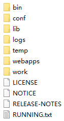

摘要：本文主要了解了Tomcat的目录结构。
打开Tomcat的目录，可以看到如下文件和文件夹：

该目录下存放的是二进制可执行文件。
如果是安装版，那么这个目录下会有两个exe文件：tomcat7.exe、tomcat7w.exe，前者是在控制台下启动Tomcat，后者是弹出GUI窗口启动Tomcat。
如果是解压版，那么会有两大类，一类是以.sh结尾的（Linux命令），另一类是以.bat结尾的（Windows命令）。startup用来启动Tomcat，但需要先配置JAVA_HOME环境变量才能启动，shutdawn用来停止Tomcat。
该目录主要用来存放一些配置文件。
server.xml：配置整个服务器信息。例如端口号、域名或IP、请求编码。
web.xml：配置Tomcat支持的文件类型，部署描述符文件，这个文件中注册了很多MIME类型，即文档类型，是客户端与服务器之间说明文档类型的。
context.xml：对所有应用的统一配置，通常我们不会去配置它。
tomcat-users.xml：存储Tomcat用户和权限的文件，这里保存的是Tomcat的用户名及密码，以及用户的角色信息。
该目录主要用来存放Tomcat运行需要加载的jar包。
如果需要添加Tomcat依赖的jar文件，可以把它放到这个目录中。例如，像连接数据库的jdbc的包。当然也可以把应用依赖的jar文件放到这个目录中，这个目录中的jar所有项目都可以共享。
该目录主要用来存放Tomcat在运行过程中产生的日志文件，如果启动Tomcat时有错误，那么异常也会记录在日志文件中。可以在服务器停止后清空该目录下的文件，不会对服务器的运行造成影响。
在Windows环境中，控制台的输出日志在catalina.xxxx-xx-xx.log文件中。
在Linux环境中，控制台的输出日志在catalina.out文件中。
该目录用于存放Tomcat的临时文件。可以在服务器停止后清空该目录下的文件，不会对服务器的运行造成影响。
该目录用来存放应用程序。
当服务器启动时会加载目录下的应用程序。可以用文件夹、war包、jar包的形式发布应用，文件夹的名称就是项目名称。其中ROOT是一个特殊的项目，在地址栏中没有给出项目名称时，默认的就是ROOT项目。
该目录存放的是服务器运行时的编译后文件，编译生成的java和class文件都会存放到这个目录下。
清空这个目录，然后重启服务器，会生再次生成work目录，这么做可以达到清除缓存的作用。